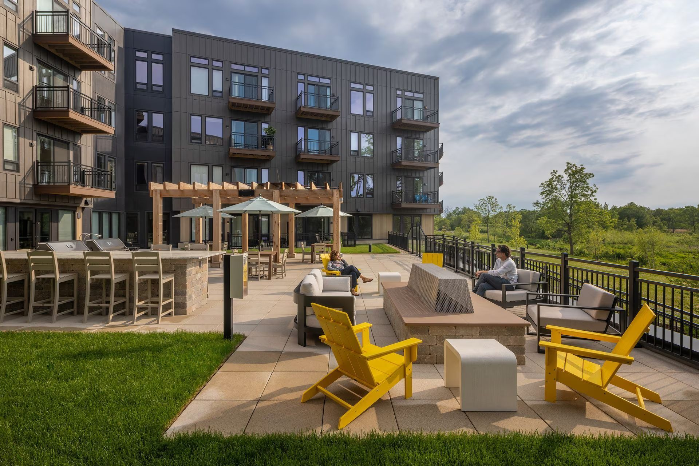
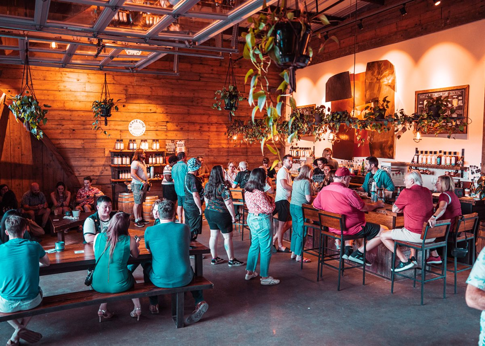
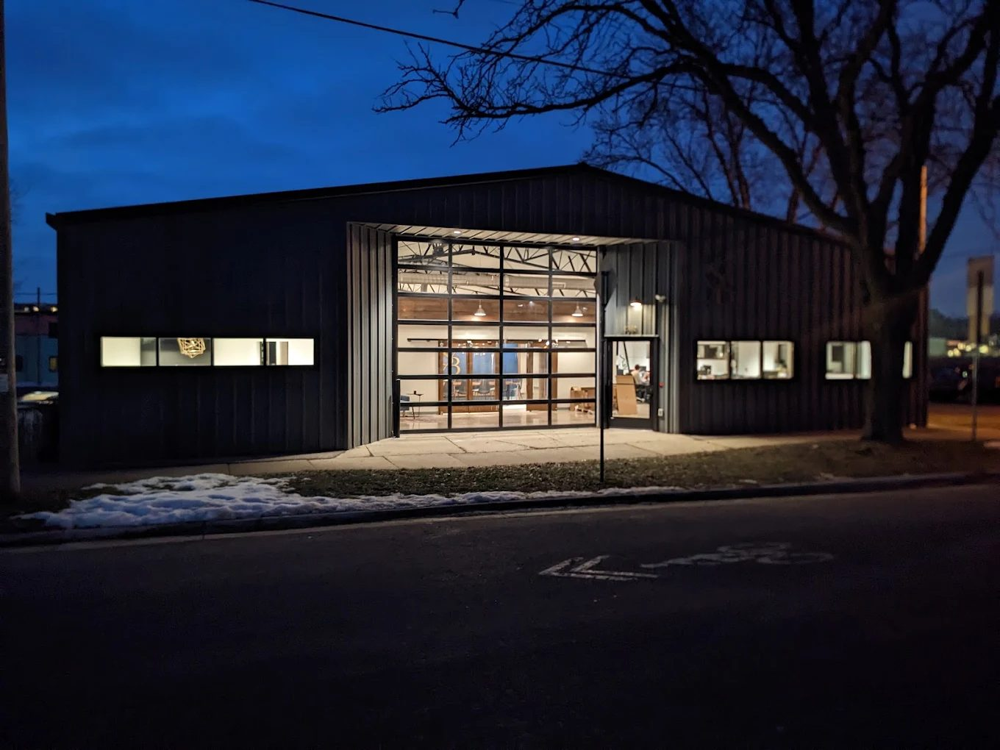
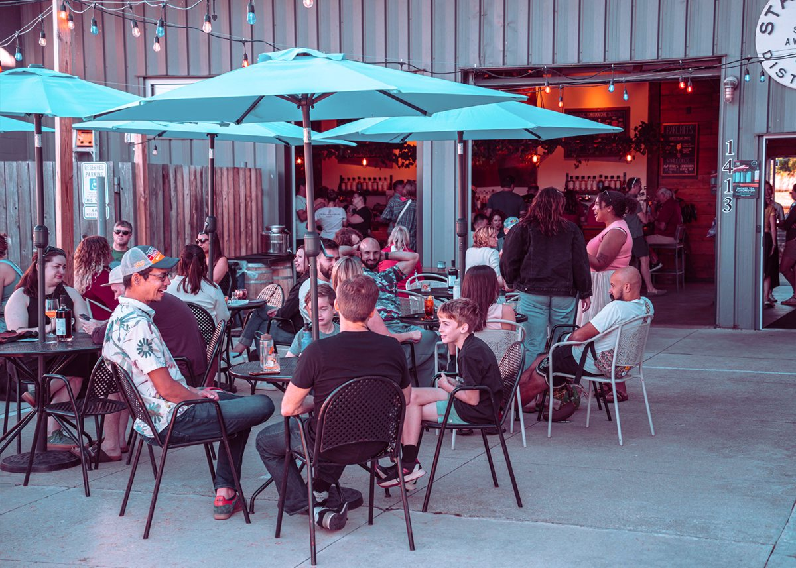

Ground Up. Adaptive Reuse.
Madison, WisconsinStarkweather Place
Built in Madison.
New Madison Development is a Madison, Wisconsin development company led by partners William Butcher and Eric Welch. NMD builds new housing and gives older industrial buildings new uses.
5projects
256new apartments
27,000square feet of industrial buildings reused (about)
Completed work
Projects.
Two apartment communities with Stone House Development, and three historic industrial buildings reinvented as office and hospitality spaces.
Madison.
- 01Starkweather PlaceEast side · 112 apartments · Completed
- 02Trader’s WayWest side · 144 apartments · Completed
- 03The TinsmithEast Main Street · About 9,000 SF · Completed
- 04210 S DickinsonMarquette neighborhood · 6,158 SF · Completed
- 05Northern Court1 block off Williamson St · About 12,000 SF · Completed
Partners.
William ButcherOwner
25+ years in Madison commercial real estate, development, and brokerage. Owner Principal Madison
Eric WelchOwner
20+ years investing, building, and developing in Madison.
Contact.
- William
- William Butcher
- Phone
- 608.301.5008
- william@newmadisondevelopment.com
- Eric
- Eric Welch
eric@newmadisondevelopment.com - Office
- 902 Williamson Street
Madison, WI 53703